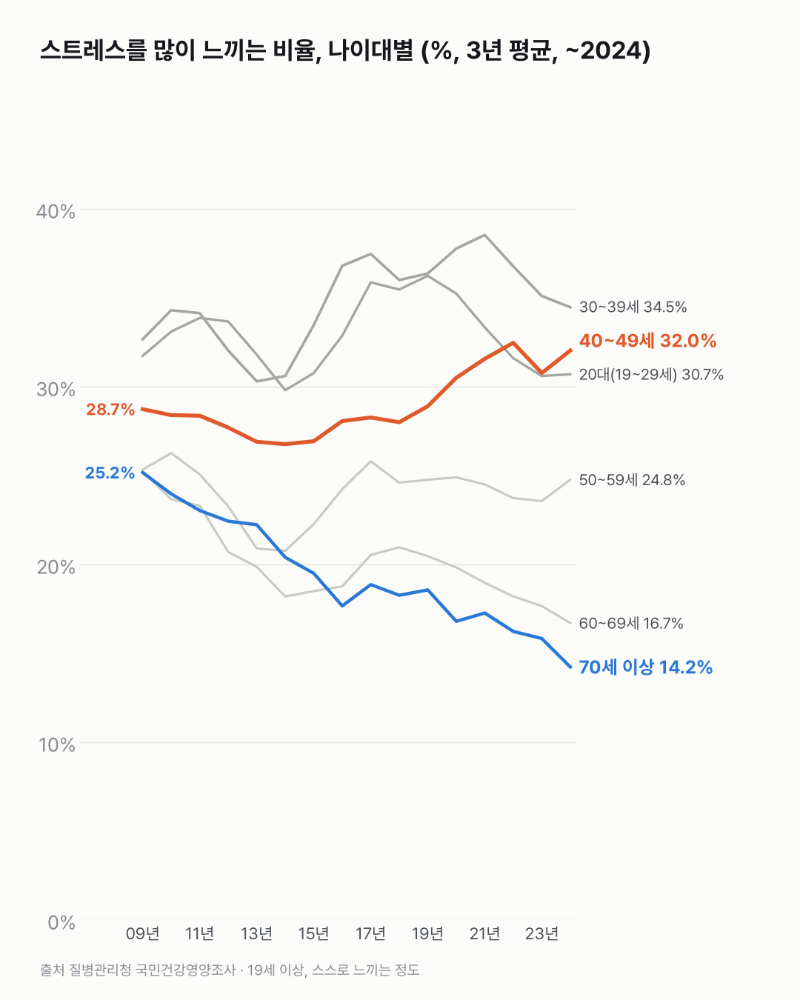
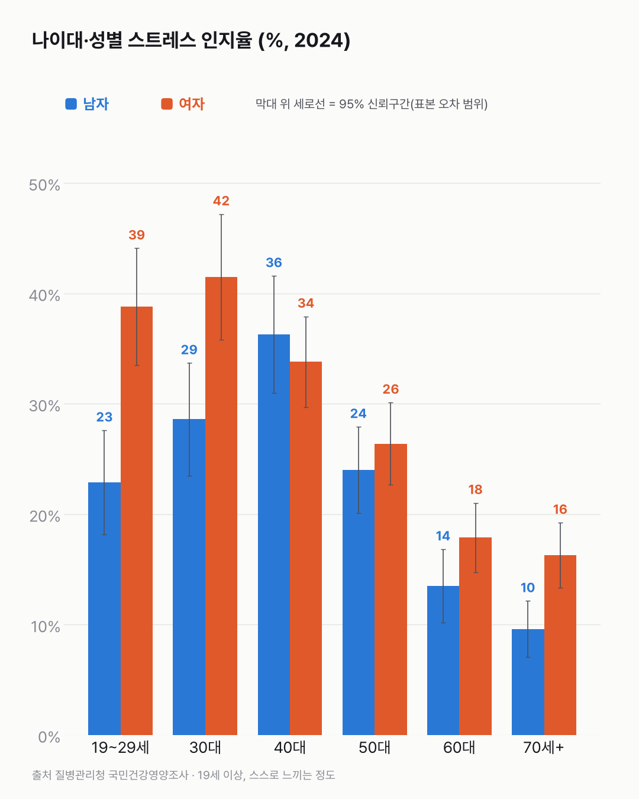

스트레스 많다는 사람, 30·40대에 몰려 있어요
스트레스가 많다는 사람은 30·40대에 몰려 있고, 60대 이상에선 크게 줄었어요.

3줄 요약
- 2022~2024년 평균으로 보면, 스트레스를 많이 느낀다는 사람은 30대(34.5%)와 40대(32.0%)가 가장 많아요.
- 40대는 2007~2009년 평균 28.7%에서 32.0%로 늘었어요.
- 60대는 25.2%에서 16.7%로, 70세 이상은 25.2%에서 14.2%로 줄었어요.
같은 표에 19세 이상 전체 비율이 두 가지로 나와요. 하나는 그대로 센 값이고, 하나는 나이 구성을 고정해서 계산한 값이에요. 그대로 센 값은 29.0%에서 25.7%로 내려갔는데, 나이 구성을 고정하면 29.3%에서 28.5%로 거의 같아요. 여기선 잠깐 헷갈렸어요. 스트레스 비율이 낮은 고령층이 인구에서 늘어난 게 전체 값이 내려간 이유의 대부분으로 보여요.
나이대별로는 30·40대가 가장 높아요. 2022~2024년 평균으로 30대 34.5%, 40대 32.0%, 20대(19~29세) 30.7%예요. 40대는 2007~2009년 평균 28.7%에서 올랐고, 30대도 32.7%에서 조금 올랐어요.
60대와 70세 이상은 크게 줄었어요. 2007~2009년엔 두 나이대가 25.2%로 소수점까지 같더라고요. 지금은 60대 16.7%, 70세 이상 14.2%예요.
2024년 한 해만 보면 40대를 빼고 여성이 남성보다 높아요. 20대는 여성 38.8%, 남성 22.9%이고, 30대는 여성 41.5%, 남성 28.6%예요. 40대는 남성 36.3%, 여성 33.8%예요.

'많이'라는 기준이 사람마다, 시대마다 같을까요? 예전의 70대와 지금의 70대가 같은 말에 같은 무게를 실었을지, 그게 남는 질문이에요.
이 숫자는 어디서 왔나요
출처
기준일 2007~2024년 조사예요(3년 이동평균).
질병관리청국민건강영양조사
- 스트레스인지율 추이KOSIS DT_11702_N061원본 보기
나이대·성별 스트레스 인지율, 표준오차, 응답자 수, 1998~2024년
어떻게 셌나요
- 스트레스 인지율은 평소 일상생활 중 스트레스를 '대단히 많이' 또는 '많이' 느낀다는 19세 이상의 비율이에요. 스스로 느끼는 정도이고, 진단이 아니에요.
- 나이대별 응답자가 해마다 600~1,300명이라 값이 출렁여요. 그래서 3년을 묶어 평균 낸 값(2007~2009년 평균 vs 2022~2024년 평균)으로 비교했어요.
- 2005년 35.1%에서 2007년 27.1%로 한 번에 크게 꺾여 조사 방식이 바뀐 것으로 보여요. 그래서 2007년부터만 썼어요.
- 같은 표에 연령 표준화 값(나이 구성을 맞춘 값)도 있어요. 2024년 19세 이상은 그냥 세면 25.9%, 표준화하면 29.0%예요. 둘 다 맞는 숫자이고 기준이 달라요.
한계 4가지
이 데이터로 말할 수 없는 것
- 스스로 답한 느낌이에요. 같은 상황도 사람마다, 시대마다 '많이'의 기준이 다를 수 있어요.
- 표본 오차가 커요. 나이대·성별로 나누면 응답자가 수백 명이에요. 둘째 차트의 신뢰구간이 겹치는 차이는 우연일 수 있어요.
- 2007년 이전과는 잇지 않았어요. 조사 방식이 달라진 것으로 보여요.
- 원인은 말하지 않아요. 보도에 따르면 스트레스 원인 1·2위는 직장생활과 경제문제지만, 이 표에는 원인이 없어요. 건강 조언도 하지 않아요.
새 글 나오면 받아 보기
피드 리더 앱에 이 사이트 주소를 한 번 넣어 두면, 새 글이 올라올 때 앱에 떠요. 가입이나 메일 주소는 필요 없어요.
받는 법 보기
- 피드 리더 앱을 하나 골라요. 새 글을 모아 보여 주는 앱이에요. 예를 들면 Feedly나 Inoreader가 있어요. 둘 다 무료고 웹·휴대폰에서 써요.
- 앱에서 '구독 추가'(+)를 누르고 아래 주소를 붙여 넣어요.
- 끝이에요. 새 글이 올라오면 앱 목록에 떠요.
https://protofu.github.io/opendata-insight/feed.xmlFeedly를 쓴다면 여기를 눌러 바로 추가할 수도 있어요.